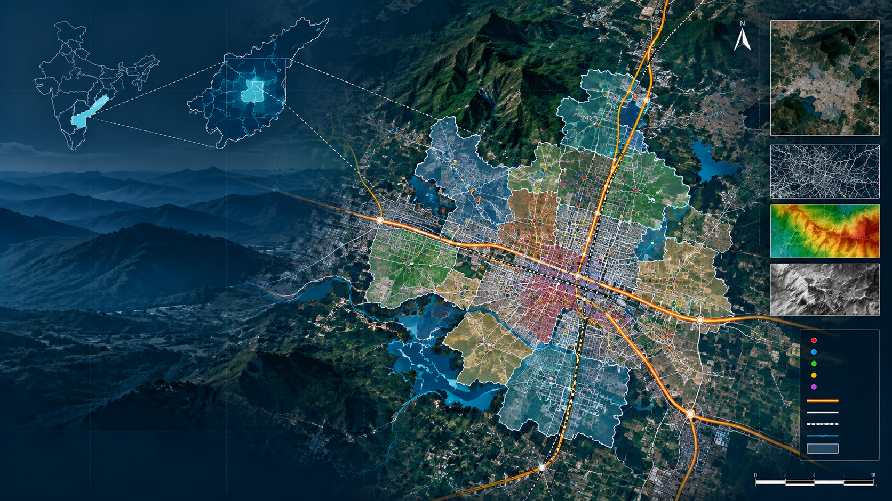
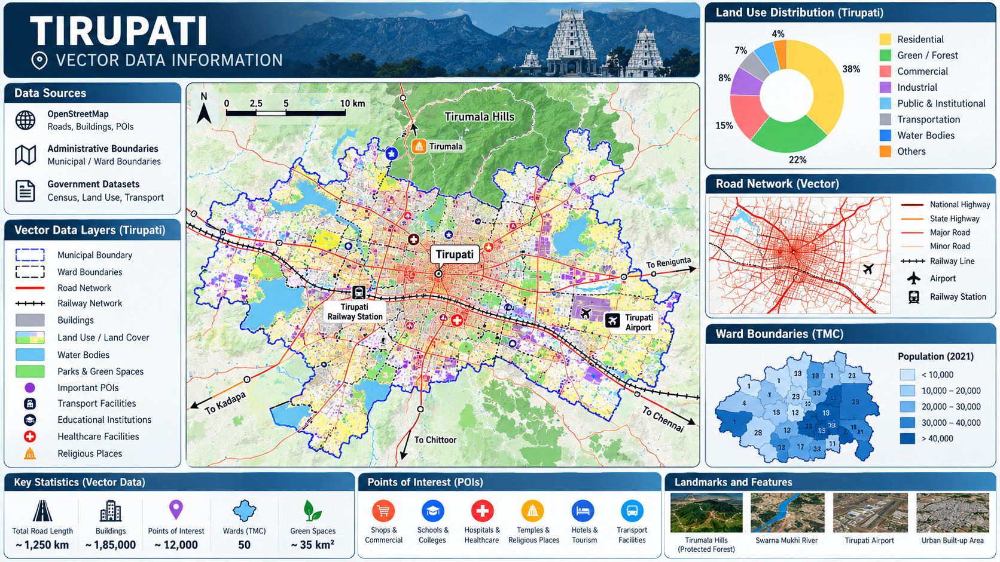
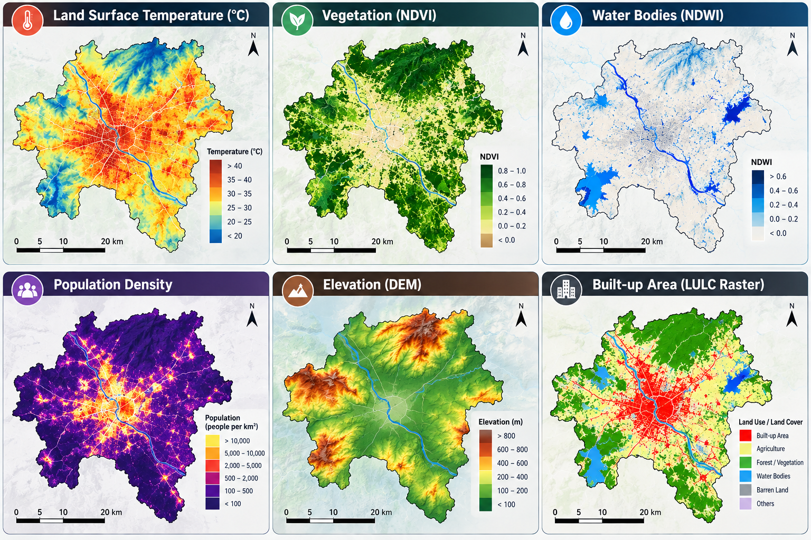

GIS & SPATIAL ANALYTICS
Exploring urban systems through geospatial data, vector mapping, raster analysis and GIS-based spatial analytics.

PROJECT 01
Preparation, visualization and spatial analysis of vector datasets using QGIS.

Tools: QGIS, OpenStreetMap, QuickOSM
PROJECT 02
Exploration and processing of raster datasets for geographic visualization and spatial analysis.

Tool: QGIS, Google Earth Pro